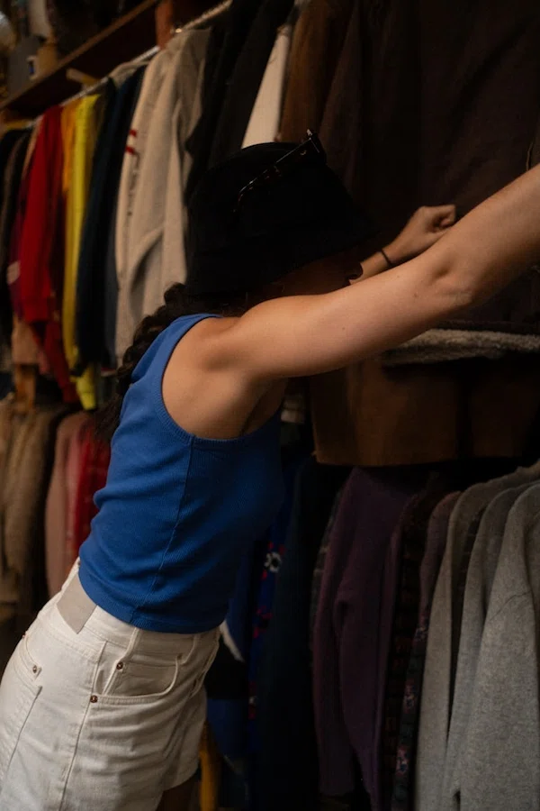
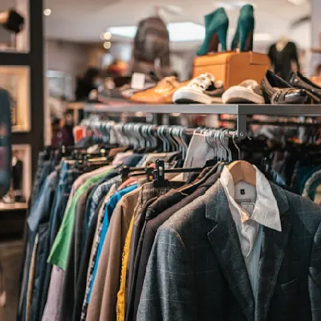
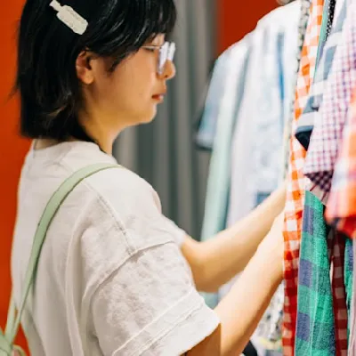

Becoming a thrifter could become the greatest lifestyle change you could make. Although it can seem like more work than going to a retail store thats organized and has recent trends, it's worth the work. Through thrifting you can find unique clothing for a portion of the price of retail shops.
Benefits

Benefit 1: Thrifting allows you to save money by buying second hand, as you only pay a fraction of the price compared to a retail store. This allows you to stretch your wardrobe budget and test different styles at a more affordable price.

Benefit 2: It allows you to create a unique personal style as you're not just shopping and places that are selling mass produced trends. Thrift stores have clothing items that could be decades apart as well as they aren't dictated by seasonal palettes.
Benefit 3: It is environmentally sustainable as it reduces demand for new production, reducing mass amounts of water, energy, pesticide-heavy agriculture and toxic manufacturing dyes. It also extends clothings lifespan keeping millions of textile waste out of land fills.